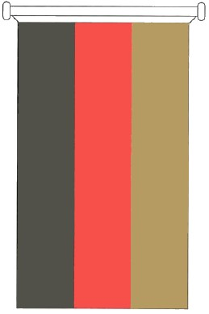
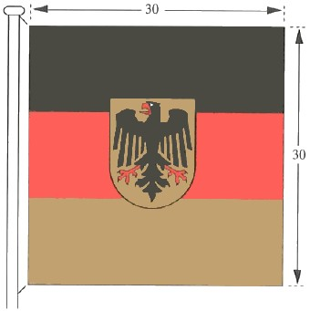
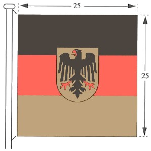
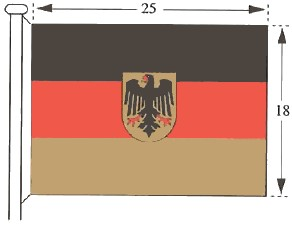
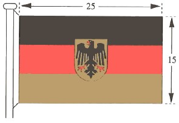
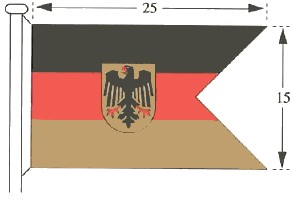
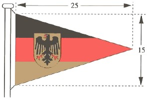

FlaggAnO 1996
Ausfertigungsdatum: 13.11.1996
Vollzitat:
"Anordnung über die deutschen Flaggen vom 13. November 1996 (BGBl. I S. 1729), die durch die Anordnung vom 22. November 2005 (BGBl. I S. 3181) geändert worden ist"
| Stand: | Geändert durch AnO v. 22.11.2005 I 3181 |
| Standarte des Bundespräsidenten | |
| Bundesflagge | Bundesdienstflagge |
|  | |
| Bundesflagge in Bannerform | Bundesdienstflagge in Bannerform |
| 1. | der Bundespräsident oder die Bundespräsidentin die Standarte gemäß Abschnitt I Nr. 2 der Anordnung, | |
| 2. | a) | der Präsident oder die Präsidentin des Deutschen Bundestages, |
| der Präsident oder die Präsidentin des Bundesrates | ||
| die Bundesdienstflagge in der Größe 30 x 30 cm (Muster I), | ||
| b) | die Vizepräsidenten und Vizepräsidentinnen des Deutschen Bundestages, | |
| die Vizepräsidenten und Vizepräsidentinnen des Bundesrates | ||
| die Bundesdienstflagge in der Größe 25 x 25 cm (Muster II), | ||
| c) | der Direktor oder die Direktorin beim Deutschen Bundestag, | |
| der Direktor oder die Direktorin des Bundesrates | ||
| die Bundesdienstflagge in der Größe 15 x 25 cm (Muster IV), | ||
| 3. | a) | der Bundeskanzler oder die Bundeskanzlerin |
| die Bundesdienstflagge in der Größe 30 x 30 cm (Muster I), | ||
| b) | die Bundesminister und Bundesministerinnen | |
| die Bundesdienstflagge in der Größe 25 x 25 cm (Muster II), | ||
| c) | die Staatssekretäre und Staatssekretärinnen des Bundes, | |
| der Chef oder die Chefin des Bundespräsidialamtes, | ||
| der Präsident oder die Präsidentin des Bundesrechnungshofes, | ||
| der Präsident oder die Präsidentin der Deutschen Bundesbank | ||
| die Bundesdienstflagge in der Größe 18 x 25 cm (Muster III), | ||
| d) | die Leiter und Leiterinnen der Bundesoberbehörden | |
| die Bundesdienstflagge in der Größe 15 x 25 cm (Muster IV), | ||
| e) | die Leiter und Leiterinnen der Bundesmittelbehörden | |
| die Bundesdienstflagge in Doppelstanderform in der Größe 15 x 25 cm (Muster V), | ||
| f) | die Leiter und Leiterinnen der Bundesunterbehörden | |
| die Bundesdienstflagge in Standerform in der Größe 15 x 25 cm (Muster VI), | ||
| 4. | a) | der Präsident oder die Präsidentin des Bundesverfassungsgerichts |
| die Bundesdienstflagge in der Größe 30 x 30 cm (Muster I), | ||
| b) | der Vizepräsident oder die Vizepräsidentin des Bundesverfassungsgerichts | |
| die Bundesdienstflagge in der Größe 25 x 25 cm (Muster II), | ||
| c) | die Präsidenten und Präsidentinnen der obersten Gerichtshöfe des Bundes | |
| die Bundesdienstflagge in der Größe 18 x 25 cm (Muster III), | ||
| d) | der Präsident oder die Präsidentin des Bundespatentgerichts, | |
| der Präsident oder die Präsidentin des Bundesdisziplinargerichts, | ||
| der Generalbundesanwalt oder die Generalbundesanwältin beim Bundesgerichtshof, | ||
| der Oberbundesanwalt oder die Oberbundesanwältin beim Bundesverwaltungsgericht, | ||
| der Bundesdisziplinaranwalt oder die Bundesdisziplinaranwältin | ||
| die Bundesdienstflagge in der Größe 15 x 25 cm (Muster IV). | ||
|  |  |
| Muster I | Muster II |
|  |  |
| Muster III | Muster IV |
|  |  |
| Muster V | Muster VI |
Maßangaben in Zentimetern | |